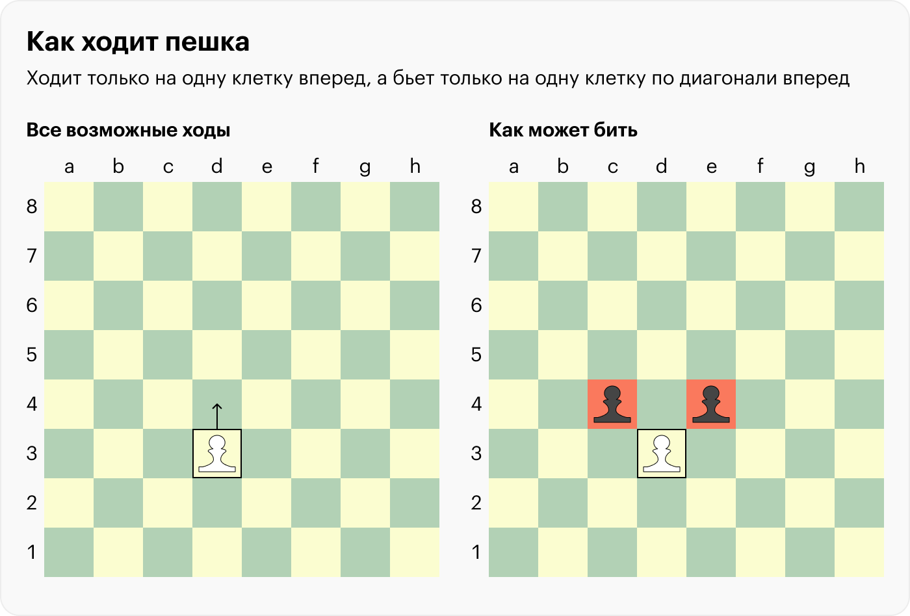
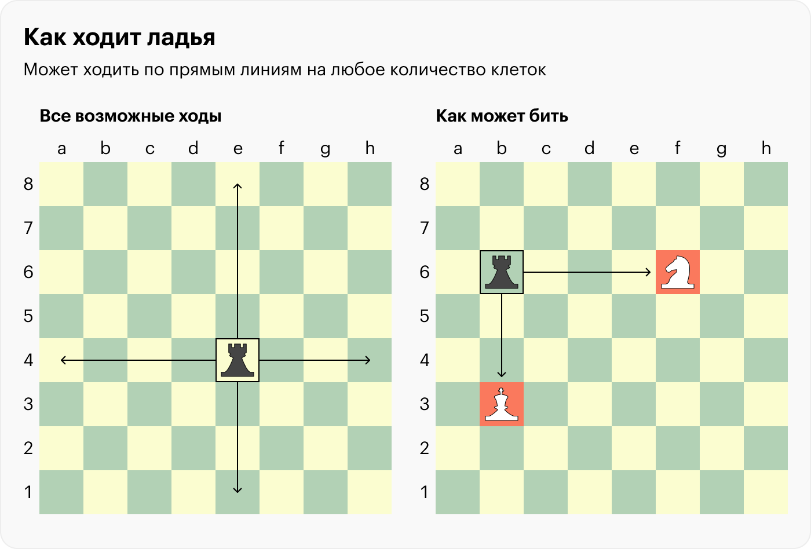
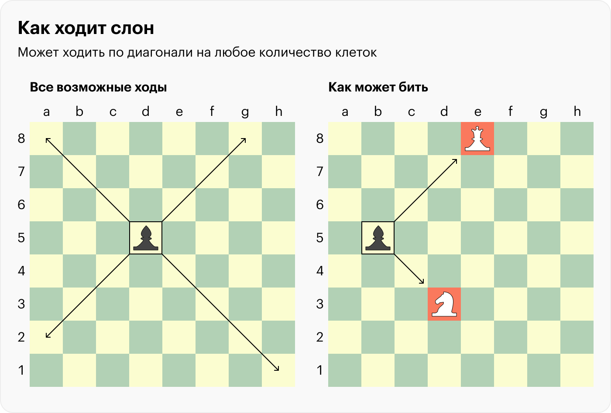
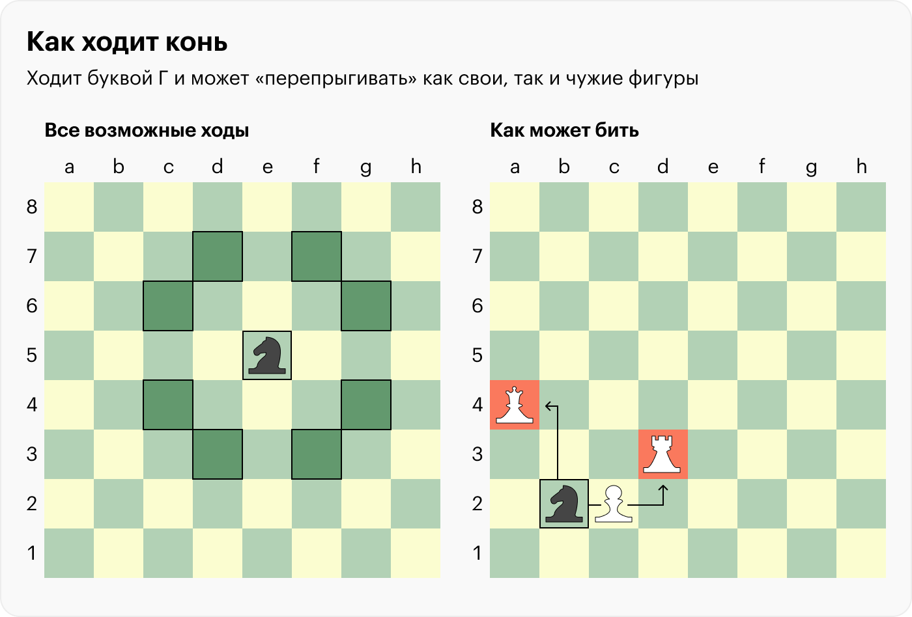
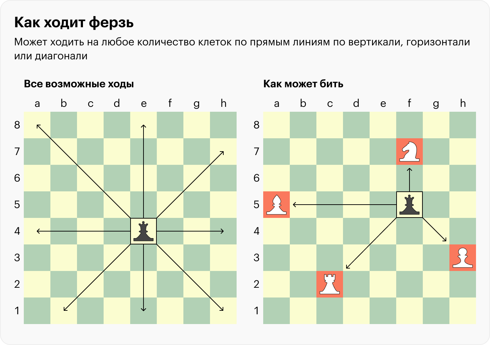
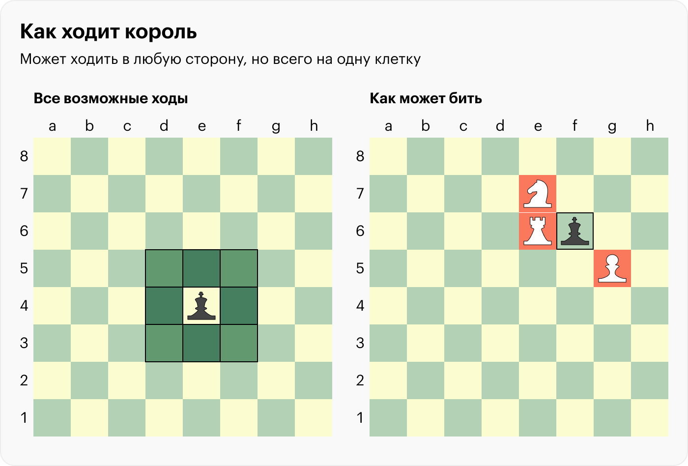

Ее легко узнать: на поле она самая маленькая, но их больше всего. А еще она самая слабая в игре. Пешка ходит только на одну клетку вперед, но бить фигуру перед собой при этом не может — только на одну клетку по диагонали вперед. как пешка ходит
Устаревшее название — тура. Внешне обычно напоминает башню с зубчатой верхушкой. Ладья может ходить по прямым линиям — вертикалям и горизонталям — на любое количество клеток. Но только если на пути нет других фигур: «перепрыгивать» их ладья не может, только «съедать». как ладья ходит
В России эта фигура раньше называлась «офицер», а в других странах ее знают как «шута» или «епископа». Узнать слона можно по напоминающей купол верхушке.Принципы хода похожи на правила для ладьи, но вместо прямых линий — диагонали. как слон ходит
Конь
Ферзь
Король
Самая узнаваемая фигура на шахматной доске, ее изображают в виде головы лошади. В английском языке называется «рыцарь», но выглядит так же.В официальных правилах сказано, что конь может ходить на одну из ближайших клеток, но не на одной с ним вертикали, горизонтали и диагонали. Достаточно запомнить, что конь ходит буквой Г.  как конь ходит
В других странах фигуру ассоциируют с женским образом: в английском языке — queen, в испанском — dama. В России ее тоже иногда ошибочно называют «королева». Узнать ферзя можно по размеру — он уступает только королю — и подобию короны на верхушке фигуры. Ферзь — самая сильная фигура в игре.  как ферзь ходит
Король — главная фигура в игре, но при этом довольно слабая. Он может ходить в любую сторону, но всего на одну клетку. При этом короля нельзя переместить под удар чужой фигуры: это приведет к поражению. Чужие фигуры он бьет так же, как и ходит, но его редко используют для атаки: слишком высок риск проиграть партию. как король ходит